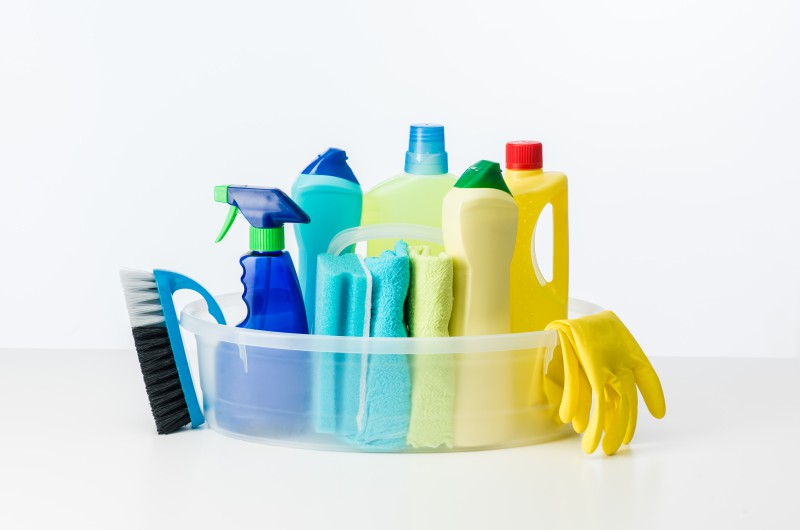

- Utilizar determinados productos de limpieza
La mayoría de los productos de limpieza procedentes de la industria están elaborados con productos potencialmente tóxicos, y algunos incluso muy contaminantes. Para evitarlos, lee atentamente la composición de los productos que adquieras o, si te animas, te proponemos que los fabriques en tu propia casa con componentes completamente naturales. A continuación te ofrecemos algunos ejemplos de productos de limpieza completamente biodegradables y caseros, aunque en Internet podrás encontrar mucha más información sobre el tema:
Suavizante: además de ser respetuoso con el medio ambiente, el suavizante casero elaborado simplemente con vinagre (medio litro), agua (1 litro) y bicarbonato (un par de cucharadas soperas) te permitirá ahorrar algunos euros, ¡que siempre vienen bien!
Limpiador de plata: los productos químicos para limpiar cuberterías u otros objetos de plata suelen ser altamente tóxicos y abrasivos, pero los puedes sustituir por una simple piel de plátano: frotando su cara interior contra los objetos de plata conseguirás limpiarlos y hacerlos brillar como nunca.
Restauradores de madera: las masillas para cubrir arañazos y golpes en los muebles de madera se pueden sustituir con nueces sin cáscara: si las frotas sobre los arañazos, verás cómo en pocos minutos desaparecen sin tener que emplear productos abrasivos de ninguna clase.
